- 让做饭成为一种艺术
- 微波炉广式肠粉
- 工艺： 微波
- 口味： 家常味
- 烹饪时间：<15分钟
- 不是肠，不是粉，你到底是何方妖孽
微波炉广式肠粉
-
身为广东人，我从小就喜欢吃拉肠，我曾经考虑过买蒸拉肠的拉肠机，家人强烈反对，只能放弃。有次在公交车上看到公交播放的视频，用微波炉制作拉肠，看着真的太简单太方便了。可是视频没有配方，我上网搜了很多配方，每一个配方都试了一次，图片里是我感觉挺好的配方。
-
粘米粉 80克 澄粉 40克 玉米淀粉 20克 盐 1克 水 380ml 虾米20克 香葱粒 适量 米酒 几滴 食用油 20ml
做法：
- 准备所有材料：虾米洗净切小粒，香葱洗净切葱粒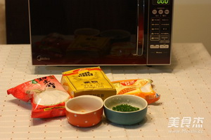
- 把粘米粉、澄粉、玉米淀粉和水一起搅拌均匀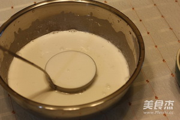
- 虾米粒滴入几滴米酒和食用油，拌匀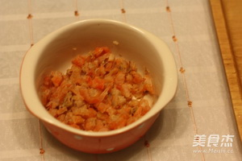
- 把虾米粒放进微波炉，在上方遮一层扎了孔的保鲜膜，或盖上盖子留出缝隙，用高火加热1分钟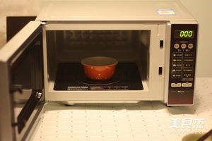
- 加热好的虾米喷香，撒入米酒不会有腥味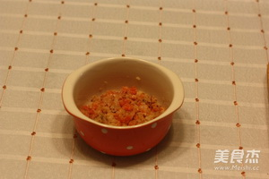
- 在微波炉盒子里，扫一层油，再把约50毫升的粉浆和虾米粒、葱花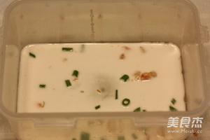
- 将盖子盖在微波炉专用盒子上，留出缝隙不要盖牢，然后把粉浆放进微波炉里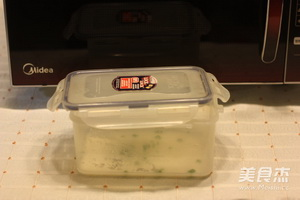
- 按下微波炉的功能键“火力100”，时间1分钟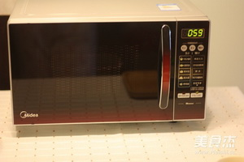
- 从微波炉取出拉肠，用小勺子和筷子将肠粉卷起来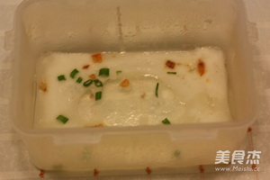
- 10多分钟就能做好一盘拉肠，然后淋上拉肠酱油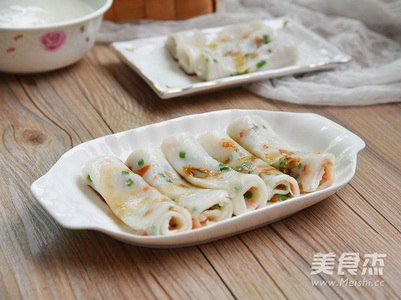 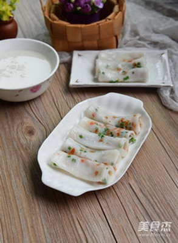
烹饪技巧：
- 1 图片里的微波炉盒子是塑料的，比较薄，用时短，如果用厚的微波炉盒子时间要长些
- 2 粉浆要薄薄地铺在微波炉盒子里，不要太厚了，厚了不好卷，而且厚了不够滑
- 3 家庭里制作拉肠酱油，把姜葱爆香，加入适量水、蚝油、生抽和少许老抽，用小火煮开即可。